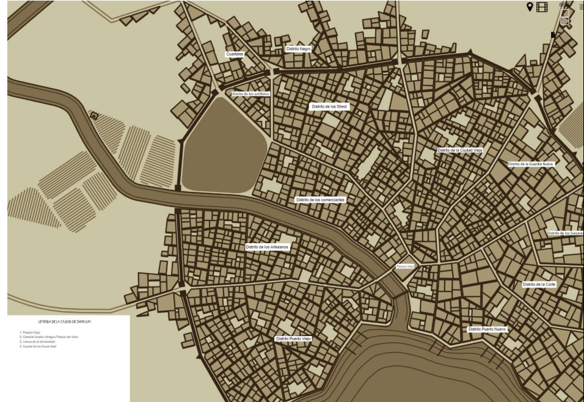
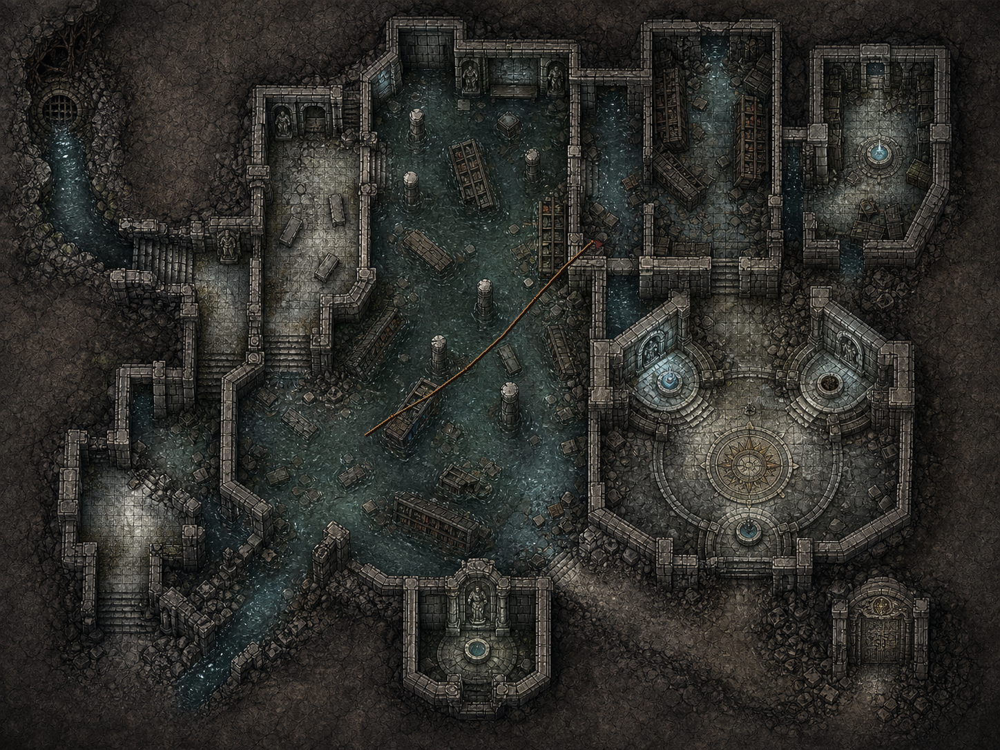
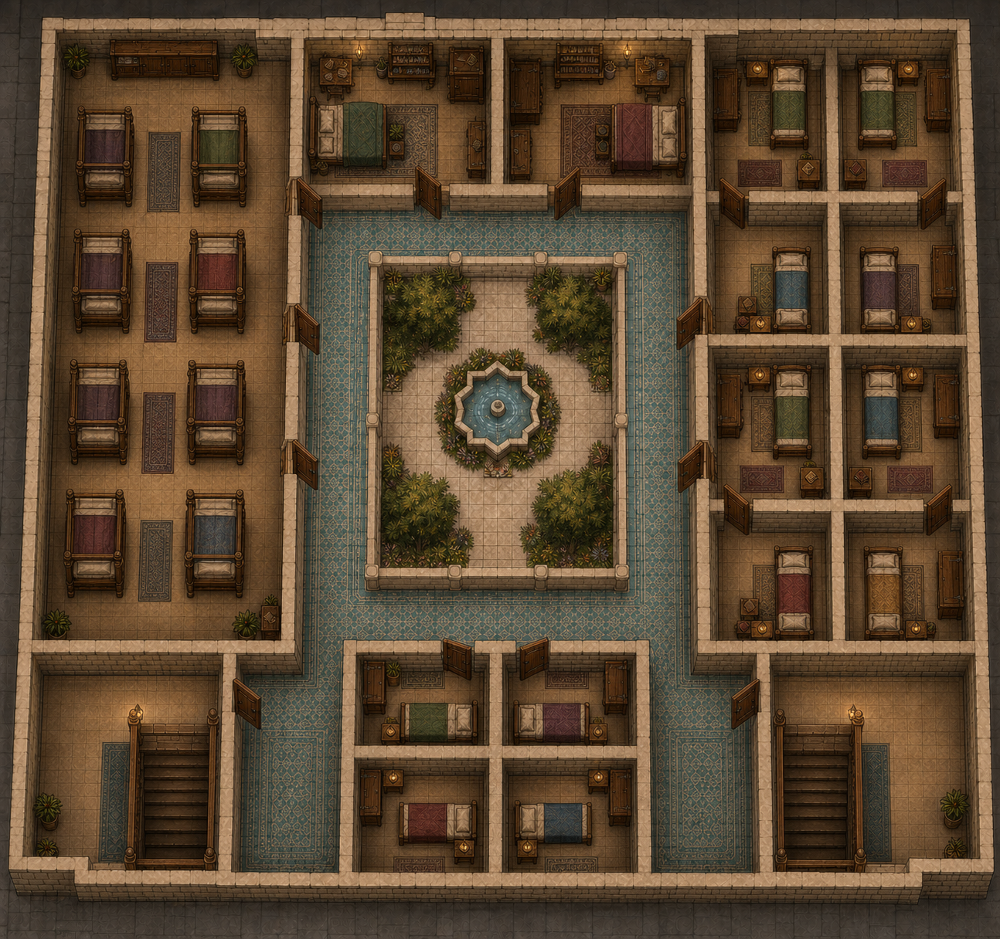
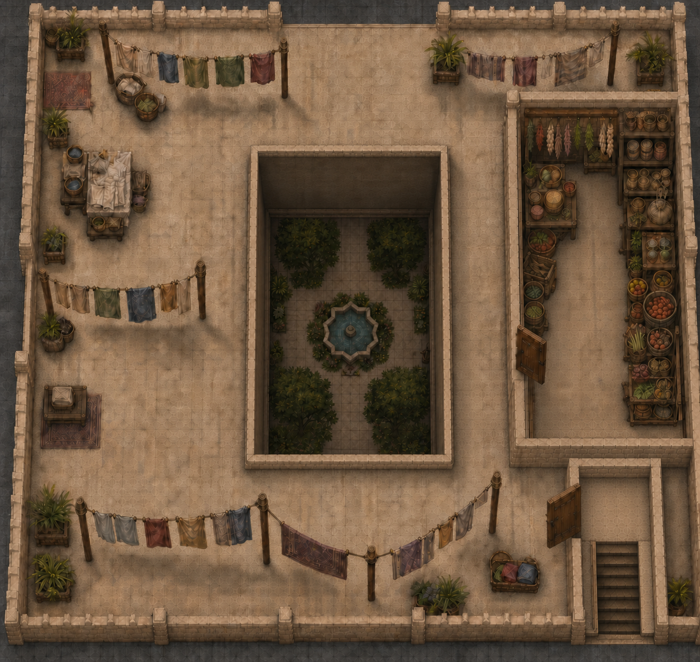
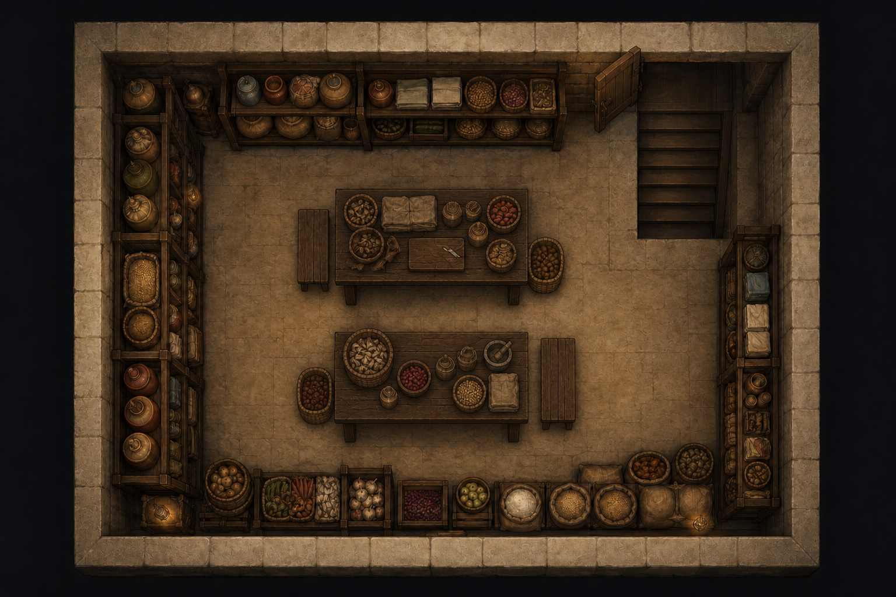
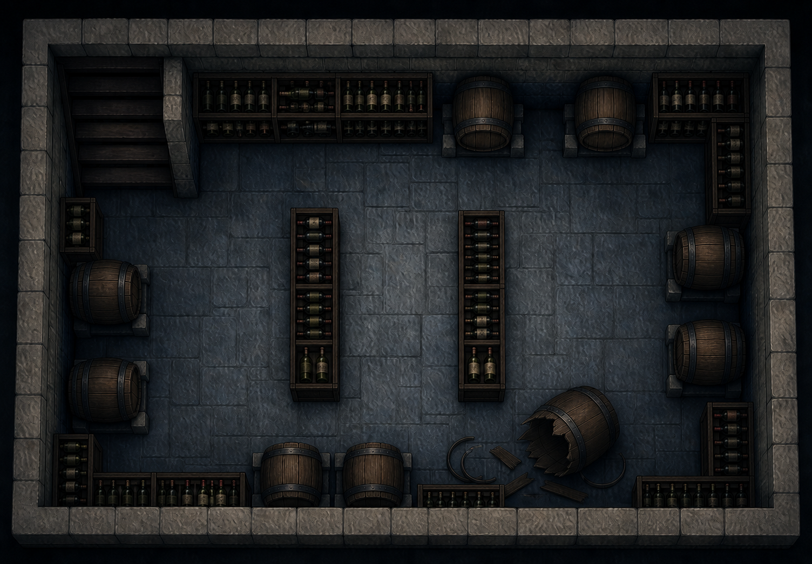

Vista de Sharuum
Una lectura general de la ciudad: la relación entre el río, el puerto, las murallas y los barrios que ya conoce la campaña.

Cartografía original de Ignacio · Midnight Nightmares.
07 · CARTOGRAFÍA PÚBLICA
Este atlas se ordena por ciudad y barrio. Solo reúne mapas de jugador y lugares ya conocidos: no contiene claves de Dirección, cloacas, rutas de partida viva ni material de MOD005.
CIUDAD PORTUARIA
La ciudad se abre entre el río Eren y el golfo. Sus distritos, murallas y muelles sitúan las historias que empiezan más allá de las puertas.
Una lectura general de la ciudad: la relación entre el río, el puerto, las murallas y los barrios que ya conoce la campaña.

Cartografía original de Ignacio · Midnight Nightmares.
DISTRITO EXTERIOR DE SHARUUM
Calles, puerto y barrios que quedan fuera de la fachada imperial. Cada nueva localización se incorporará aquí, bajo la zona que le corresponda.
La vista de conjunto de TrasPuertas: sus calles, el puerto y los edificios principales que los personajes han recorrido.

Cartografía original de Ignacio · Midnight Nightmares.
Interior de posada visto desde arriba: calle lluviosa al oeste y chimenea al este.

GUÍA DE TRASPUERTAS
Cerca del puerto, El Marino Cojo ocupa una posada de madera levantada sobre una antigua herrería. Los techos bajos conservan el olor del carbón junto al de la comida puesta al fuego. Ilic la regenta y el barrio la conoce como refugio y punto de encuentro: un lugar sencillo donde marineros y extranjeros intercambian noticias antes de regresar a una calle que exige prudencia.
La lluvia queda atrás cuando cruzáis la puerta, aunque continúa golpeando la calle al oeste como grava contra la madera. Dentro, el techo bajo atrapa el calor y el olor de una olla junto al fuego. Hacia el este, la chimenea arroja luz cobriza sobre las tablas mojadas.
Cartógrafo · Midnight Nightmares.
Barrio visto desde arriba: muralla al norte, Calle de Melaza al este, Consigna y puerto al oeste.

GUÍA DE TRASPUERTAS
Dar al-Sahil es una colmena pobre junto a la muralla norte y la Calle de Melaza. La tormenta dejó un vacío entre viviendas, talleres y pasos estrechos. El barrio se entiende por sus sonidos y por la cautela de sus vecinos: cada piedra apartada pertenece también a la casa de alguien.
La muralla cierra el norte como una pared sin final, húmeda bajo los desagües. Al oeste llegan el olor del puerto y el ruido de la Consigna; al este, la Calle de Melaza se pierde entre edificios estrechos. Los vecinos se mueven alrededor del derrumbe con cubos, cuerdas y tablas.
Cartógrafo · Midnight Nightmares.
Ruinas inundadas bajo Dar al-Sahil: el agua divide las estancias y los pasillos de piedra conectan las zonas transitables entre estanterías derribadas.

LOCALIZACIÓN CONOCIDA
Las salas visibles conservan el rastro de un lugar de estudio convertido en ruina. El mapa muestra lo que ya se ha recorrido; una guía narrativa completa se añadirá cuando quede revisada como contenido público de campaña.
Midnight Nightmares · Cartografía.
LOCALIZACIÓN CONOCIDA · TRASPUERTAS
El Orfanato Al-Sharid ocupa una casa grande que alguna vez habló de riqueza y que ahora cuenta una historia distinta. La piedra noble sigue en la fachada, pero las ventanas bajas, reparadas con madera desigual y telas enceradas, revelan dónde se gasta el esfuerzo: en frenar la lluvia, conservar el calor y mantener abierta una puerta para quienes no tienen otra. La casa no ha perdido del todo su antigua dignidad; la ha puesto a trabajar.
Los cinco planos públicos presentan el edificio como un organismo doméstico. La planta baja reúne comida, aprendizaje, conversación y oficio alrededor de un patio luminoso. En el piso superior la casa baja la voz y se divide en dormitorios. Sobre ellos, la azotea recibe el sol, el viento y la ropa tendida, mientras una buhardilla conserva alimentos y hierbas. Bajo el suelo, dos espacios de almacén sostienen la vida cotidiana con reservas secas, barricas y útiles sencillos.
Nada parece nuevo ni perfecto. Las mesas están hechas para durar, los textiles muestran remiendos y cada estancia conserva el orden práctico de un lugar donde siempre queda algo por lavar, coser, guardar o repartir. Esa suma de trabajos modestos define el orfanato mejor que cualquier emblema: Al-Sharid es una casa que resiste porque muchas manos la vuelven a poner en pie cada mañana.

La puerta principal conduce a un zaguán sobrio y, desde allí, a una galería de azulejos que rodea el patio. En el centro, una fuente y cuatro árboles abren un espacio de luz entre las dependencias. El agua, las hojas y la piedra clara dan respiro a una planta siempre ocupada: a un lado se agrupan las mesas de estudio; cerca de la entrada, una sala amplia reúne sillas, libros, cuencos y braseros; al otro extremo, la cocina conserva el calor del hogar y la despensa ordena vasijas, cestas y alimentos.
La casa también trabaja. Los telares ocupan una sala larga, acompañados por ovillos, tejidos y arcones; no son decoración, sino parte de una rutina que remienda ropa y enseña un oficio. Las puertas que se abren a la galería permiten pasar de una tarea a otra sin perder de vista el patio. Incluso vacía, la planta baja parece guardar el murmullo de muchas jornadas superpuestas: lecciones, comida repartida, madera arrastrada, lana húmeda junto al fuego y pasos que entran de la calle buscando cobijo.

En la primera planta, la galería vuelve a rodear el patio abierto, pero el edificio cambia de ritmo. Aquí dominan las camas, los arcones bajos, las mesillas y los armarios. Una sala compartida ocupa un ala completa; en las demás se suceden cuartos más pequeños, algunos dobles y otros individuales, cada uno separado por muros y puertas visibles. Las mantas de colores distintos impiden que la repetición vuelva anónimo el espacio.
No hay lujo en estos dormitorios, aunque sí una voluntad clara de ofrecer intimidad donde la casa puede permitírsela. Un libro junto a la cama, una alfombra estrecha o una prenda doblada bastan para que cada habitación parezca habitada sin exponer la identidad de quien duerme allí. Dos escaleras mantienen separadas la llegada desde la planta baja y la subida hacia la azotea. Entre ambas, la galería sirve de pasillo, lugar de encuentro y balcón sobre los árboles, de modo que el silencio del descanso nunca queda completamente apartado de la vida común que asciende desde el patio.

La escalera desemboca en una azotea amplia, cercada por pretiles y abierta al cielo. El hueco central permite mirar hacia el patio y conserva la fuente y las copas de los árboles como corazón visible de la casa. Alrededor se extienden tendederos cargados de camisas, mantas y paños; junto a ellos esperan cestos, barreños y una mesa de trabajo donde la ropa puede clasificarse antes de volver a los dormitorios.
La cubierta no es un mirador ocioso. El sol y el viento forman parte del trabajo diario, y las plantas en maceta suavizan una superficie pensada para secar, airear y ordenar. En un lateral, una buhardilla cerrada guarda ristras de alimentos, tarros, cestas, hierbas y conservas. Su puerta da directamente a la cubierta, separada del acceso de la escalera. Desde arriba, Al-Sharid se entiende de un vistazo: una casa construida alrededor de un patio y sostenida por tareas que rara vez se ven desde la calle.

El primer almacén subterráneo es una estancia cálida y ordenada, con estantes de madera cubiertos de sacos, tarros, cestas y vasijas. Dos mesas ocupan el centro y dejan corredores amplios alrededor: allí pueden revisarse las reservas, separar alimentos estropeados o preparar lo que después subirá a la cocina. Los bancos, tablas, morteros y paños muestran un uso constante, más cercano a una despensa de trabajo que a un depósito abandonado.
La luz es escasa y dorada. Las paredes gruesas y el suelo de piedra mantienen una temperatura estable, mientras la escalera desemboca junto a una puerta abierta. Todo cuanto aparece en el plano tiene una función sencilla: conservar, contar, limpiar y repartir. Es el tipo de habitación que sostiene la casa sin participar de su ruido.

El segundo sótano tiene un carácter más frío. Barricas grandes descansan sobre apoyos de piedra y los botelleros recorren las paredes y forman dos hileras en el centro. Entre ellos quedan pasos anchos, suficientes para mover recipientes sin vaciar la sala. La iluminación azulada endurece la piedra y hace que la madera oscura parezca todavía más pesada.
En un extremo, una barrica rota ha dejado duelas y aros sobre el suelo, una herida pequeña entre recipientes que siguen elevados sobre apoyos de piedra. Los muros permanecen enteros y las marcas oscuras de antiguas crecidas cortan la regularidad de la fábrica. La escalera abre directamente a la estancia. Allí, el olor de madera húmeda y vino agrio completa la impresión de un espacio antiguo que todavía presta servicio, pese al agua, al desgaste y a los años acumulados bajo la casa.
Cartografía PJ autorizada por Ignacio · Midnight Nightmares.